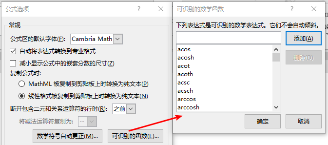

周围很多人对Word中输入公式的方式非常不满，认为在Word中打公式太慢，因而转投LaTeX。每当发现这样的情况，我就会告诉他们其实Word现在输入公式已经可以非常快了，而且相比TeX，可以实时预览能方便太多！我的大部分复变笔记就是在Surface上全部用Onenote输入的。然而坑爹的就是Word对公式输入的帮助非常少，很难搜到详细的文档（好吧我被打脸了，这里有官方文档：英文|中文）。因此此文的目的就在于详细展示一下Word中快速输入公式的技巧，造福广大苦逼工科生。
在Office2010之前的早期版本，Word中的公式是MathType通过“域”的方式插入的（类似于在Word中插入Visio图表的样子），实际渲染时直接是生成图片，而如果需要编辑的话得在外部程序MathType中编辑。这个方式有很多弊端，一很丑，二生成的pdf的公式是图片，三操作很不方便。而在近期的Office版本中公式输入大有改进，并且在PPT、Onenote（包括Win10的UWP版）等Office软件中已经全面支持native体验的公式输入（公式编辑器貌似被称作UnicodeMath，在Office大部分产品中都已包含），现在我打公式的速度已经起飞了。
基本操作 ❮
在Word中任意位置按下Alt+=（Mac中是Control+=）可以切换公式编辑，或者选中文字按下Alt+=把它变成公式，再按Ctrl+I可以设置成斜体。输入内置公式或者拷入的公式可以按Enter可以整体格式化。对于格式化的公式可以选择“线性”格式查看原始文字。在公式编辑中，快捷命令通过空格可以立即转换成格式化后的公式形式，因此当公式没有按照你想要的形式生成时可以按空格试试。
例如内置公式(a+b)^n=∑_(k=0)^n▒〖(n¦k) a^k b^(n-k) 〗，选中它后按下Alt+=，然后把光标移到末尾按回车即可变成格式化的公式：
$$(a+b)^n=\sum_{k=0}^n\binom{n}{k}a^kb^{n-k}$$
在Word公式中有一些内置的函数识别（例如sin、exp），这些函数的名字打完后按空格会自动生成公式块，并且取消函数名称的斜体显示。即$sin$ → $\sin\square$
内置的函数名的列表可以在Word的公式选项中“可识别的按钮”面板中查看

快捷命令 ❮
公式输入有不少快捷命令（转义符），熟练掌握就能大大提高速度。
Note: 在下面的命令中，空格是很重要的。如果代码中有空格的话代表在Word中输入时也要按下空格。
常规符号 ❮

在Word的公式工具栏中，鼠标移到工具栏符号列表中的符号上即可看见符号的意义和快捷命令。（不过不是所有符号都有快捷键）

例如在上图中，小于等于的快捷输入方法是\le、\leq和<=，其中输入<=会自动转换成该符号，而另外两个需要输入后按空格才会立即转换（不按的话在继续输入公式时也会转换）。
Tips ❮
- 变体字母有三种：手写体（
\script$），花体（\fraktur$），双线（\double$），其中$为任意字母（大小写是对应的）。这三种字母应用在不同的场景，需注意区分。如\doubleR($\mathbb{R}$)为实数，\scriptR($\mathcal{R}$)为黎曼积分，\frakturR($\mathfrak{R}$)为实部。部分字母的双线形式可以直接通过\$$打出（如\jj→ $\mathbb{j}$，\Dd→ $\mathbb{D}$）- 〈与TeX相同〉希腊字母的快捷命令，小写开头为小写，大写开头为大写：
\gamma→ γ\Gamma→ Γ。个别字母有多种小写，如\phi→ $\phi$ |\varphi→ $\varphi$。这样的字母有\varepsilon \varphi \varpi \varrho \varsigma \vartheta。- 〈与TeX相同〉积分符号、导数等是可以累计的：
\int \iint \iiint \oint \oiint \dot \ddot \prime \pprime
括号 ❮
括号会默认配对和自动封闭，如果需要输入不自动配对的括号，或者转义括号，请使用命令输入括号，而不是直接打（括号的快捷命令见下文）。
如果只有一边括号，使用位置符可以\open \close或\begin \end封闭括号块：{5x\close结果为$\{5x$，\open5x}结果为$5x\}$。当然，直接打{5x也是可以的，但是这样的话5x和{会在同一级，而如果封闭括号块后5x会被包在一个公式块内，并且可以自动根据括号内内容调整大小。
例：123\open 45\close=123\begin 45\end=123〖45〗=123\box 45 → $123\boxed{45}$
排版符号 ❮
- 位置格式符：
\above: 位于上方 （显示为 $\perp$ ，即\perp/\bot）\below: 位于下方 （显示为 $\top$ ，即\top）\left: 位于左侧 （显示为 $\vdash$ ，即\vdash）\right: 位于右侧 （显示为 $\dashv$ ，即\dashv）\atop: 上下排列 （显示为 ¦ ）
\rect: 矩形方框\matrix: 矩阵 &\eqarray：多行公式&: 换列（可以看作\t，对应TeX的&）- 也可以作为参数分隔：
\sqrt(5&2)→ $\sqrt[5]2$
- 也可以作为参数分隔：
@: 换行（可以看作\n，对应TeX的\\）- 例：
\matrix (A&B@C&D)→ $\begin{array}{lc}A&B\\C&D\end{array}$
\of：构建子区域，用于文字运算的表达- 例：
cov \of (A^T A)→ $\mathrm{cov}\left(A^TA\right)$
- 例：
Tips ❮
多行公式可以利用
&指定对齐位置：
\eqarray (x+y&=2@x+y+z&=3@z&=5)$$\begin{array}{rcl}x+y&=&2\\x+y+z&=&3\\z&=&5\end{array}$$\eqarray (&x+y=2@&x+y+z=3@&z=5)$$\begin{align}&x+y=2\\&x+y+z=3\\&z=5\end{align}$$多行公式对齐也可以用Shift+Enter换行之后，右键在菜单中选定指定位置对齐。不过此方法只能指定一个对齐位置。
使用
\Vmatrix开头可以直接输入竖线包围的矩阵：
\Vmatrix (A&B@C&D)$$\begin{Vmatrix}A&B\\C&D\end{Vmatrix}$$
自动合并 ❮
在公式输入时，有不少的符号会自动合并，便于你输入一些常用符号。如之前所说，这些快捷方式都能在工具栏的提示框中可以找到，但是由于不好找，这里还是总结一下:
+-→ $\pm$,-+→ $\mp$...→ $\ldots$/=→ $\neq$,~=→ $\cong$,/~=→ $\ncong$:=→ $\mathrel{\vcenter{:}}=$/>→ $\ngeq$,/<→ $\nleq$>>→ $\gg$,<<→ $\ll$>=→ $\geq$,<=→ $\leq$->→ $\rightarrow$,<-→ $\leftarrow$>-→ $\succ$,-<→ $\prec$ (好像只有OneNote支持)=>→ $\Rightarrow$ (好像只有OneNote支持)
工具栏中常用结构的输入 ❮

分数 ❮
- $\frac{A}{B}$ ←
A/B - ←
A\sdiv B - $A⁄B$ ←
A\ldiv B - $\partial A$ ←
\partial A（偏导）
上下标 ❮
- $A^B$ ←
A^B - $A_B$ ←
A_B - $A^B_C$ ←
A^B_C - $_C^BA$ ←
(_C^B)A
根式 ❮
- $\sqrt A$ ←
\sqrt A - $\sqrt[B]A$ ←
\sqrt (B&A)或\root B\of A - $\sqrt[3]A$ ←
\cbrt A - $\sqrt[4]A$ ←
\qdrt A
积分、大型运算符 ❮
- $\int A$ ←
\int \of A - $\int^B_C A$ ←
\int^B_C\of A
Tips ❮
- 积分号可以换成如下符号：〈与TeX相同〉
- 积分:
\int \iint \iiint \oint \oiint \oiiint \coint \aoint- 求和/积:
\sum \amalg \prod \coprod- 逻辑:
\bigcap \bigcup \bigsqcup \bigvee \bigwedge- 转换如下两种形式的符号有两种方法：
- 右键积分符号
右键菜单中还有隐藏上下限等选项。
- 在公式选项页面卡中
（前提是公式显示为“显示”模式而非“内嵌”模式）


括号 ❮
- $\left(A\right)$ ←
(A) - $A)$ ←
\open A) - $(A$ ←
(A\close - $\left(A\vert B\right)$ ←
(A\vbar B)（分隔符能分割出两个公式块） - $\binom{A}{B}$ ←
(A\atop B) - $\left\{\begin{aligned}A\\B\end{aligned}\right.$ ←
{\matrix (A@B)\close
括号有如下选择：
\bra \ket \langle \rangle \Rangle \lbrace \rbrace \lbbrack \Rbrack \lbrack \rbrack \lceil \rceil \lfloor \rfloor \vert \Vert \lmoust \rmoust
导数符号（上下标） ❮
- $\overrightarrow A$ ←
A\vec
相同用法的符号有：
\dot \ddot \dddot \bar \Bar \ubar \Ubar \vec \lvec \hvec=\rhvec \lhvec \tvec \hat \tilde，以及音标符号：\grave \acute \breve \check
- $\overbrace A^B$ ←
\overbrace A\above B
相同用法的符号有：
\overbar \overbrace \overbracket \overline \overparen \overshell
- $\underbrace A_B$ ←
\underbrace A\below B
相同用法的符号有：
\underbar \underbrace \underbracket \underline \underparen
- $\boxed A$ ←
\rect A
极限和对数 ❮
- $\log_B\left(A\right)$ ←
log_B A - ←
lim\below B A或lim_B A
min、max、sup、inf等用法类似
运算符 ❮
- $\overset{def}{=}$ ←
\defeq， $\overset\cdot=$ ←\doteq， $\overset\Delta=$ ←\Deltaeq - $\xrightarrow A$ ←
\rightarrow \below A - $\xleftarrow[A]{}$ ←
\leftarrow \above A
可以替换的箭头符号：
\leftarrow \Leftarrow \leftharpoondown \leftharpoonup \rightarrow \Rightarrow \rightharpoondown \rightharpoonup \leftrightarrow \Leftrightarrow \Longleftarrow \Longleftrightarrow \Longrightarrow \lrhar
矩阵 ❮
- $\begin{array}{ccc}A&B&C\\D&E&F\end{array}$ ←
\matrix (A&B&C@D&E&F) - 常用占位符:
- $\cdots$ ←
\cdots - $\ddots$ ←
\ddots - $\vdots$ ←
\vdots - ←
\rddots - $\dots$ ←
\dots或\ldots
- $\cdots$ ←
例：与括号结合：
(\matrix (A&\cdots &B@\vdots &\ddots &\vdots @C&\cdots &D) )→ $\begin{pmatrix}A&\cdots&B\\\vdots&\ddots&\vdots\\C&\cdots&D\end{pmatrix}$
预置公式 ❮
\binomial: 二项式展开\identitymatrix: 单位矩阵\integral: 某积分式\limit: e的极限定义式\quadratic: 一元二次方程根
在工具栏里没有显示出来的命令还有很多，比如空格命令：
\nbsp \thicksp \thinsp \vthicksp \zwnj \zwsp
其他技巧 ❮
快捷命令列表 ❮
对于Word中符号的快捷命令，有很多都是与TeX相似的，因此可以参照TeX的符号列表查找符号的输入。此外，还可以参考前文提到的很全面的官方参考文档，以及在百度我搜到的唯一一份介绍Word公式快捷输入的文档，这里面有一部分命令的列表。
工具栏内所展示的快捷命令其实不完全，Word中所有内置的快捷命令可以通过“公式选项”→“数学符号自动更正”菜单进行查看，不过这里面的列表可读性太差，因此不推荐使用。

使用MathML来进行TeX与Word公式的转换 ❮
MathML是一种用于描述公式的XML语言，十分强大，公式的描述能力要强于Word与TeX，但缺点就在于过于繁杂。MathML格式的公式可以直接拷贝进Word公式编辑中，因此如果需要在TeX与Word公式之间进行转换的话，可以先将TeX公式渲染为MathML，然后将MathML导入Word。这里推荐一个网站：Wiris Editor
此外在Word2016以后，已经直接支持内置公式与TeX公式的转换了。详见官网。
公式自动编号 ❮
编写论文时经常会遇到公式自动编号的问题，这是很多人转投TeX的另一个原因。但其实在Word里实现公式自动编号也很简单，可以用一个无框表格把公式包起来，第一个单元格放公式，第二个单元格放编号。编号可以用自定义的编号样式来完成，设定好编号以后输入新公式时编号使用同样的样式即可完成自动编号了。

其他资料 ❮
- Unicode Nearly Plain-Text Encoding of MathematicsVersion 3
- Word数学符号输入手册
- 常用数学符号的 LaTeX 表示方法：可以参考里面的符号命令，与Word是基本一致的。
- MathML与LaTeX生成器
本文介绍了一下Word中公式输入的快捷键，Office中有很多没有well-documented的功能，大家可以多去挖掘挖掘，能够有效提高效率~